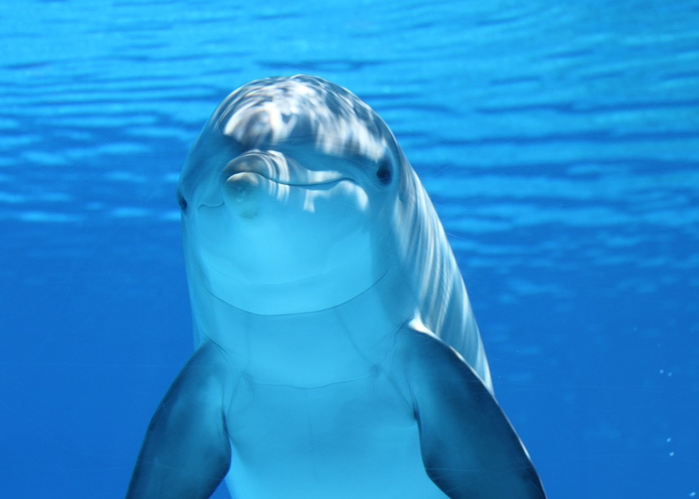
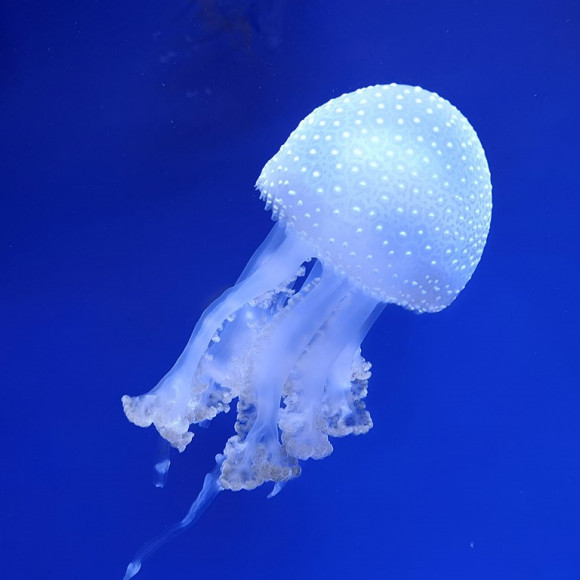
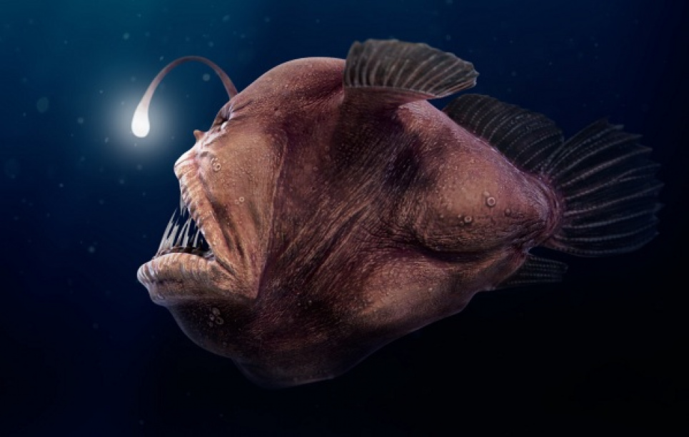
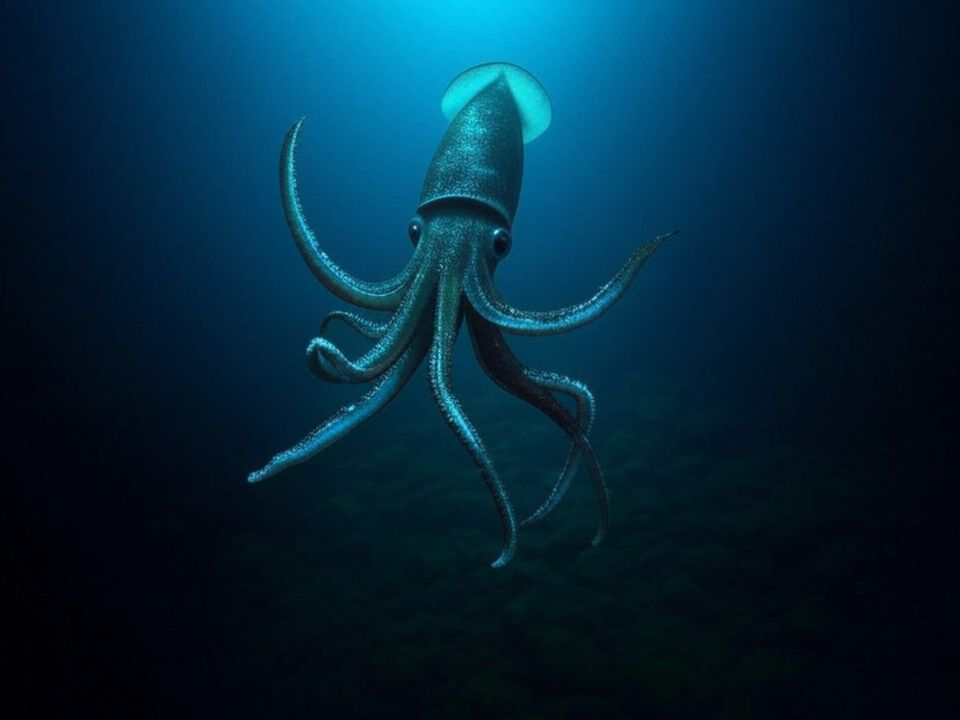

Поверхня (0-50 м)
Дельфін
Дельфіни живуть у теплих водах і спілкуються звуками. Вони дуже розумні та товариські.
Цікаво: Кожен дельфін має своє ім'я, яке використовує для спілкування.

200 м - сутінкова зона
Медуза
Медузи повільно плавають у темряві. Їхні тіла на 95% складаються з води.
Цікаво: Деякі медузи світяться в темряві - це називається біолюмінесценція.

1000 м - темна зона
Риба-вудильник
Має ліхтарик на голові, щоб приваблювати здобич у повній темряві.
Цікаво: Ліхтарик світиться завдяки бактеріям, які живуть у спеціальному органі риби.

4000 м - дно
Гігантський кальмар
Величезний мешканець глибин. Може досягати 10-12 метрів у довжину.
Цікаво: Тиск тут у сотні разів більший, ніж на поверхні. Кальмари мають найбільші очі у тваринному світі.

11000 м - Безодня
Глибоководні риби
Найглибша точка океану в Маріанській западині. Тут живуть дивні істоти, пристосовані до неймовірного тиску.
Цікаво: Еверест сховався б під водою повністю - над ним залишилося б ще 2 км води.